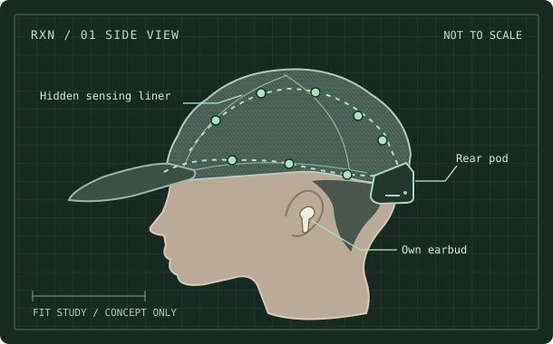
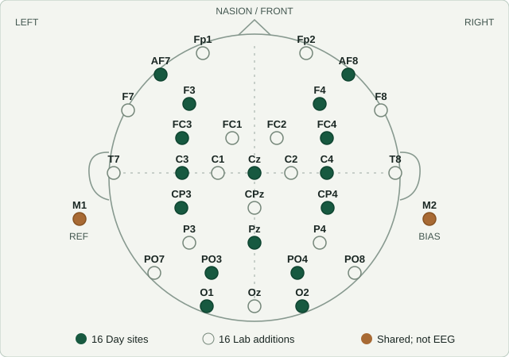

Research release / R0 / November 2026
Rexzen
Neural.
An EEG liner that looks like an ordinary cap. Designed to propose a command, never to act on its own.
A 16-channel daily configuration and 32-channel lab configuration. This is a design release, not functional hardware or a product launch.

Offline experiment / PhysioNet EEGMMIDB
More contacts didn’t help this decoder.
We reanalysed 720 cued left-versus-right motor imagery trials from 16 people. The same covariance decoder scored higher with the proposed 16-site subset than with the 32-site subset. These were existing lab recordings, not data from a Rexzen cap.
Not a field test, speech result or proof of asynchronous control. Full protocol and uncertainty ↗
| Proposed DAY 16 · covariance | 63.4% |
|---|---|
| Central 8 · covariance | 61.0% |
| LAB 32 · covariance | 59.3% |
| DAY 16 · shuffled labels | 49.6% |
Hardware direction
Put the fit before the model.
A removable liner reaches the crown and the back of the scalp. Fit feedback identifies lost contacts. The decoder can reject noisy data instead of guessing, and the phone requires a separate confirmation. Earphones stay independent of the headwear.
Long questions are composed and reviewed, not read from thoughts. Chess, FPS and robot examples are local replays. No live game integration, actuator control, cloud AI or neural capture is present.

Download / check the work
Engineering package.
- Technical design report · PDFElectrodes, electronics, AI, controls, risk, manufacture
- Investor deck · PowerPointProblem, first milestone, experiment, claims boundaries
- Design data and reproducibility bundle · ZIPEditable design, rollout, BOM, benchmark and local demo code; no raw EEG
- Benchmark output · JSONParticipant-bootstrap intervals and file integrity hashes
- Source evidence · JSONPrimary papers, technical documents and matched excerpts